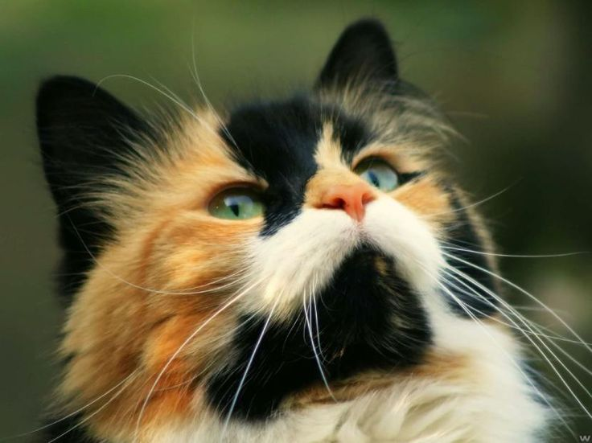
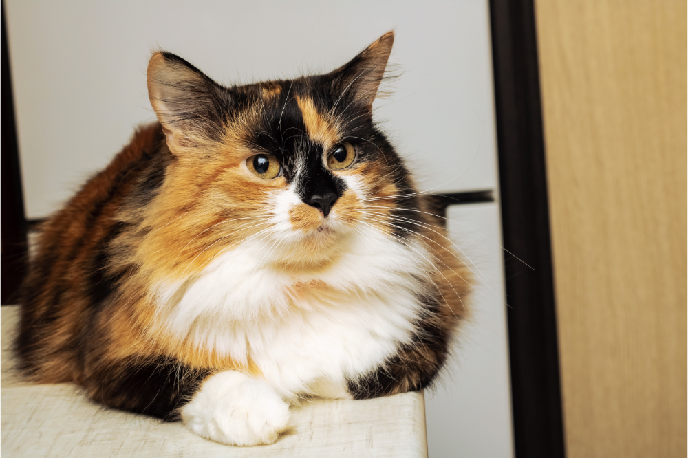
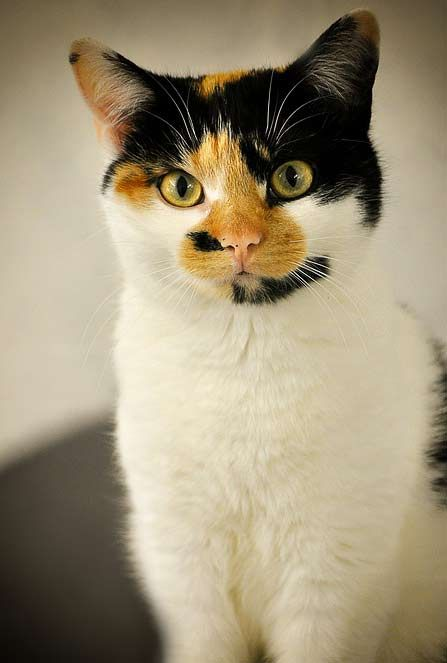
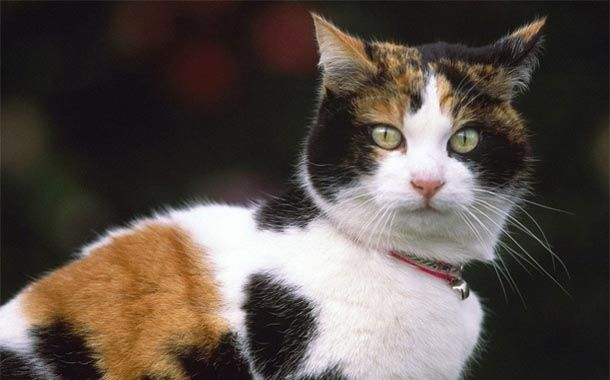
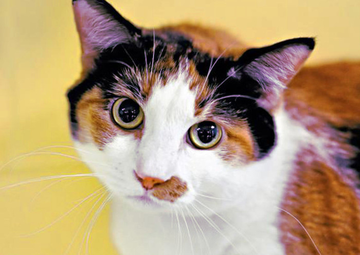
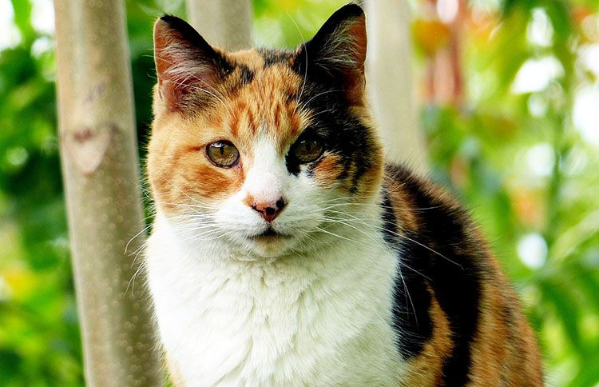
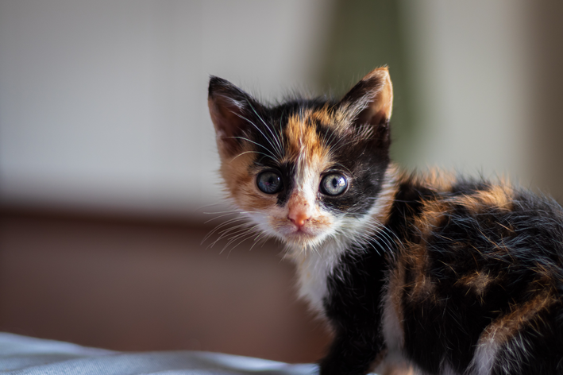

GATO TRICOLOR
¿Que es un gato tricolor?
Un gato tricolor es un felino doméstico, que puede ser de pelo corto o largo, caracterizado por combinar en su pelaje tres colores, el blanco, el negro y el naranja, o sus diluciones, blanco con gris y amarillo.
Estos colores se distribuyen en manchas o parches irregulares por todo su cuerpo, lo que les confiere un aspecto muy particular y llamativo.








ORIGEN DE LOS GATOS TRICOLOR
- Genética: El color tricolor se debe a la combinación de dos genes en el cromosoma X. Las hembras tienen dos cromosomas X, lo que permite que se expresen ambos colores. Los machos, que generalmente tienen un solo X, son mucho más raros.
- Cruces: Se cree que la aparición de gatos tricolores es el resultado de cruces selectivos entre diferentes razas y poblaciones de gatos a lo largo del tiempo.
- Historia: Aunque los gatos tricolores pueden encontrarse en diversas culturas, su popularidad ha crecido en la época moderna, convirtiéndose en un símbolo de buena suerte en algunas tradiciones
Curiosidades de un gato tricolor
- En algunos países como Japón se considera que los gatos tricolores traen buena suerte y se les considera símbolo de prosperidad.
- Aunque los gatos tricolores son mayoritariamente hembras, existen casos excepcionales de gatos machos tricolores debido a una anomalía genética.
- En el mundo de la genética felina, los gatos tricolores son conocidos como «tortoiseshell» o «torties».
¿Por qué los gatos tricolor siempre son hembras? Explicación biológica
La razón está en la genética. En los gatos, el rasgo del color está ligado al género. Es decir, dependiendo de si es gato o gata, su patrón de color varía. La información genética para que aparezca el color NEGRO o NARANJA está en el cromosoma X. Como todos sabeis:
- Las hembras tienen dos cromosomas X, es decir son (XX).
- En cambio los machos tienen sólo uno y son (XY).
¿Por qué el patrón tricolor está asociado a las hembras?
El patrón tricolor es una característica única de las hembras. Pues al estar el color naranja asociado a cromosoma X, las hembras (XX), son las únicas que pueden heredar dos colores diferentes (naranja y negro).
En cambio los machos (XY) solo presentan un cromosoma X, el cual definiría si es negro o naranja, pero nunca ambos colores.
Existe una mínima posibilidad de que nazca un gato macho tricolor, específicamente 1 de 3.000 gatos tricolores nacidos. Y si se da este caso, el gato muy probablemente será infértil. Un 99,96% de los gatos tricolor, son hembras.
QUE NESECITAS PARA ADOPTAR UN GATO?
- Prepara tu hogar para la llegada del nuevo miembro felino.
- Las ventajas de adoptar en lugar de comprar.
- El gato adecuado según tu estilo de vida.
- Sobre el proceso de adopción y qué esperar.
- La adaptación del gato a su nuevo hogar.
Mas información